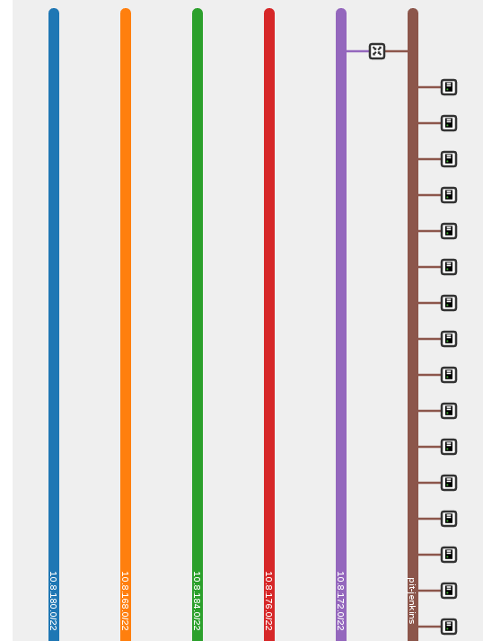
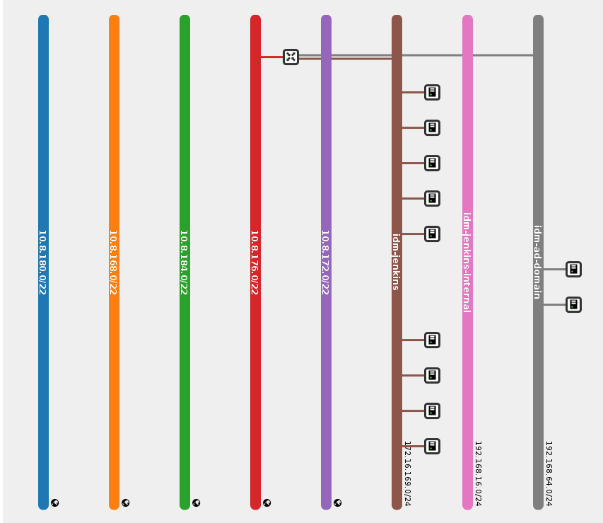

Providers¶
The definition of provider for PAWS is the location where the Windows will be provisioned and managed by PAWS. it is the list of providers supported:
Openstack¶
PAWS is integrated with Openstack and able to provision, configure and manage Windows virtual machines running on public or private clouds.
Path: /home/$USER/paws/credentials.yaml
credentials:
- provider: openstack
os_auth_url: http://my-openstack.com:5000/v2.0
os_username: paws
os_password: ********
os_project_name: paws
| Field name | Description | Value |
|---|---|---|
| provider | name of provider where your Windows system will live | openstack, libvirt |
| os_auth_url | OpenStack URL/port for authentication | HTTP URL see in file above to use OSP7 |
| os_username | Username to login to OpenStack tenant | tenant username |
| os_password | Password to login to OpenStack tenant | tenant password |
| os_project_name | Name of the OpenStack tenant or project | tenant or project |
Path: /home/$USER/paws/resources.yaml
resources:
- name: PAWS_WIN2012_R2
provider: openstack
count: 2
image: win-2012-r2
flavor: 4
network: 10.8.172.0/22
keypair: paws
ssh_private_key: /home/ecerquei/.ssh/paws
administrator_password: my_password@2016
PS: resources accepts multiple resources definition.
| Field name | Description | Required |
|---|---|---|
| name | The name that will be given when the instance is provisioned (Openstack sets this as the instance name). When count > 1 during provisioning the instance name will be automatically appended with sequential numbers. | Yes |
| provider | provider name to use | Yes |
| count | The number of identical resources to create. This count only applies to each specific resource section. It does not apply to all resources in the file. | Yes |
| image | The name of the image to be used to create the instance. The Windows image should exist and your provider account must have permission to use it. Check Openstack in FAQ to see how you can get the full list of current Windows images in your Openstack provider | Yes |
| flavor | The flavor name or ID which should be used when creating the new instance Check Openstack FAQ to see how you can get the full list of current Windows flavors in your Openstack provider | Yes |
| network | The name or ID of a network to attach this instance to. This network will provide the floating IP to your instance. You will want to supply the external network name as your network if it has a router connecting it to an internal network. | Yes |
| keypair | The key pair name to be used when creating an instance | Yes |
| ssh_private_key | Absolute path from your host machine to the SSH private key to login to system via SSH | Yes |
| administrator_password | The administrator password to set on the Windows system after provisioning has finished If you do not want to set an administrator password initially you can remove this key from your resource section. It will then use the Admin account to login to the system via SSH | No |
| snapshot | Take a snapshot for a given resource. You can define a list of tasks when to take a snapshot | No |
Note
- snapshot: Take a snapshot for a given resource. You can define a list of tasks when to take a snapshot.
# Example 1: Create snapshot & clean old server snapshots
resources:
- name: MY_WINDOWS_VM
snapshot:
- task: teardown
The resource above will take a snapshot and clean any old snapshots created for this VM (MY_WINDOWS_VM) during teardown task. The default behavior is when you give a list of tasks to create snapshots it will always create the snapshot and clean old snapshots. To override this please see the following example:
# Example 2: Create snapshot & do not clean old server snapshots
resources:
- name: MY_WINDOWS_VM
snapshot:
- task: teardown
clean: False
This resource will take a snapshot and will not clean old snapshots created by paws for this server.
single network¶
An Openstack tenant which has a single network connected to a public network.
You can find your Openstacks network topology by accessing the following link with your credentials http://ip/dashboard/project/network_topology/
Example resources.yaml:
resources:
- name: PAWS_WIN2012_R2
provider: openstack
count: 2
image: win-2012-r2
flavor: 4
network: 10.8.172.0/22
keypair: paws
ssh_private_key: /home/ecerquei/.ssh/paws
administrator_password: my_password@2016
Note
E.g. Looking at the network topology image above, you will see a router is connected to the 10.8.172.0/22 external network. This external network can be used as the network name in your resources.yaml.
multiple networks¶
A Openstack tenant which has multiple networks connected to a public network.
You can find your Openstacks network topology by accessing the following link with your credentials http://ip/dashboard/project/network_topology/
Example resources.yaml:
resources:
- name: MY_WINDOWS_VM
count: 1
image: win-2012-r2
flavor: 4
network: network_name
floating_ip_pools: 192.186.1.0/22
keypair: my_key_pair
ssh_private_key: /home/user/.ssh/id_rsa
administrator_password: my_password@2016
In this example we want to highlight on two keys that will need to be set correctly if your Openstack tenant has multiple networks connected to the same public network. For information about all other keys, please reference to the descriptions above.
Note
(REQUIRED) - network: The network name should define which internal network you want the instance to be created on. It should not be the name of the external network to attach too.
E.g. Looking at the network topology image above, we will want to give the name of one of the internal networks to use. In this case we will give idm-ad-domain.
- floating_ip_pools: The name of the external network to use to create the floating IP for the provisioned instance.
E.g. Looking at the network topology image above, we will want to give the floating_ip_pools a value of 10.8.176.0/22. Since this is the external network connected to one of the internal networks in the image.
Attention
If your Openstack has multiple networks connected to the same external network, it is REQUIRED that you set the floating_ip_pools key. This key tells paws which external network to use to create the floating IP.
Setting both network and floating_ip_pools for a single network connected to an external network will work as well.
Libvirt¶
PAWS is integrated with Libvirt and able to provision, configure and manage Windows virtual machines running locally.
PAWS Image Service is an internal repository for Windows QCOW images. If you have your own QCOW Windows images ready to run on Libvirt you only need to configure your paws files.
To run PAWS with libvirt you need to create credentials.yaml and resources.yaml see below details for these two files and a sample.
To configure your machine to run PAWS with libvirt follow the section Running Windows on VM
path: /home/$USER/paws/credentials.yaml
credentials:
- provider: libvirt
qemu_instance: qemu:///system
imgsrv_url: http://imgsrv.url.com
| Field name | Description | Value |
|---|---|---|
| provider | name of provider where your Windows system will live | openstack, libvirt |
| qemu_instance | specify the instance for QEMU driver to use | system, session for more information https://libvirt.org/drvqemu.html |
| imgsrv_url | URL to retrieve the pre-configured Windows image for Libvirt | http://imgsrv.url.com or for dev purpose, if running IMGSRV locally you can use http://127.0.0.1:5000 |
path: /home/$USER/paws/resources.yaml
resources:
- name: PAWS_WIN2012_R2
provider: libvirt
memory: 4000
vcpu: 1
disk_source: /home/user/Downloads/windows_2012_R2.qcow
win_username: Administrator
win_password: my_password@2016
| Field name | Description | Required |
|---|---|---|
| name | The name that will be given when the instance is provisioned | Yes |
| provider | provider name to use | Yes |
| memory | The amount of memory you want to set for the new virtual machine that will be provisioned must be in MB | Yes |
| vcpu | The number of virtual CPU you want to allocate for the new virtual machine | Yes |
| disk_source | The location in your local machine where the pre-configured Windows image will be saved. This file is the storage drive for your virtual machine | Yes |
| win_username | the username pre-configured in the Windows image. You get this from IMGSRV | Yes |
| win_password | the password pre-configured in the Windows image. You get this from IMGSRV | Yes |

{kind=link}
{kind=link}